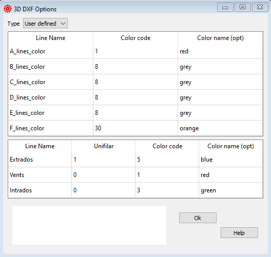

3D DXF options¶
With the 3D DXF options you define the colors for the different lines in the final drawings.
{kind=link}
Raw data:
*******************************************************
* 25. GENERAL 3D DXF OPTIONS
*******************************************************
1
A_lines_color 1 red
B_lines_color 8 grey
C_lines_color 8 grey
D_lines_color 8 grey
E_lines_color 8 grey
F_lines_color 30 orange
Extrados 1 5 blue
Vents 0 1 red
Intrados 0 3 green
Type¶
3D DXF options is an optional section.
If you do not want to define/ use these parameters set the Type to Defaults.
Line name¶
The line names are fix and must be entered as shown below.
Color code¶
Usual color index numbers for CAD systems: 1= red, 2=yellow, 3=green, 4=cyan, 5=blue, 6=magenta 7=white 8=dark grey 9= grey,… up to 255 depending on your color palette.
It is preferable not to use colors with more than two digits.
Color name¶
A free description of the color you have setup.
Unifilar¶
0= ovalized visualisation of the surfaces 1= unifilar visualisation
A more detailed description you can find here Laboratori d'envol website.